I hold a Bachelor of Electrical Engineering from Universitas Padjadjaran. I have a strong interest in Artificial Intelligence and website development. Proficient in Python, AI development, and website development. I have experience as a laboratory assistant and have worked on projects as an AI engineer and UI developer. Currently, I am serving as a Civil Servant at the Ministry of Cooperatives of the Republic of Indonesia as a Frontend Developer.
▪ Final GPA: 3.68/4.00
▪ Active in organizations and committees at association, faculty, and university levels.
▪ Working under the Assistant Deputy for Digitalization to modernize Indonesia's cooperative ecosystem.
▪ My role primarily focuses on Frontend Development, where I build responsive web platforms to improve cooperative systems.
▪ Manage departmental administration and execute strategic directives from leadership to support the ministry's digital initiatives and operational efficiency.
▪ Assist in completing all tasks assigned by direct superiors as part of learning and familiarization with tasks and functions in all work units of the Ministry of Cooperatives.
▪ Attend internal training or modules to improve capabilities.
▪ Design and develop a prototype for Fast Fourier Transform-based distance relay protection system for power transmission simulation using Matlab/Simulink.
▪ Learned basic program of FPGA.
▪ Mentored and guide six students in practicum about the basics of logic gates and making circuits.
▪ Prepare quizzes for practicum participants and assess practicum results reports.
▪ Mentored and guide five students in practicum with about 7+ modules using MultiSIM software.
▪ Prepare quizzes for practicum participants and evaluate results reports.
▪ Simkopdes (Sistem Manejemen KDKMP) is a centralized digital platform designed to streamline administration, financial operations, and membership management for village-level cooperatives.
▪ Developed and maintained responsive, user-friendly frontend interfaces for the Simkopdes web platform.
▪ Integrated APIs with frontend components to enable real-time data processing and seamless user workflows.
▪ The SAVI (smart vehicle) robot is a robot that can navigate and help humans carry items.
▪ Help develop the design and electrical circuit of the robot.
▪ Responsible for developing manual control with hand gestures and human-following using an AI-based camera.
▪ Developing a user interface website for deploying the AI model and controlling the system.
▪ Kasya (kata isyarat) is a project to develop software AI for translating Indonesian sign language (Bisindo) in real-time.
▪ Responsible for developing an AI model using a pre-train model for recognizing the sign language, creating datasets, and deploying on the website.
Centralized digital platform designed to streamline administration, financial operations, and membership management for cooperatives.
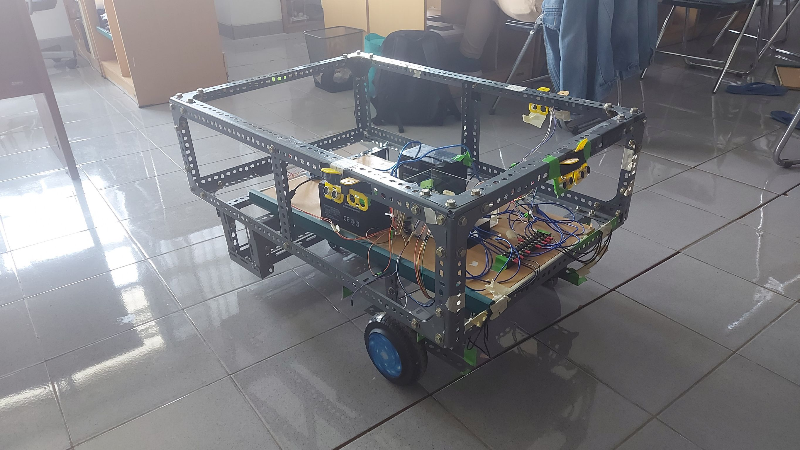
The SAVI (smart vehicle) robot is a robot that can navigate and help humans carry items.
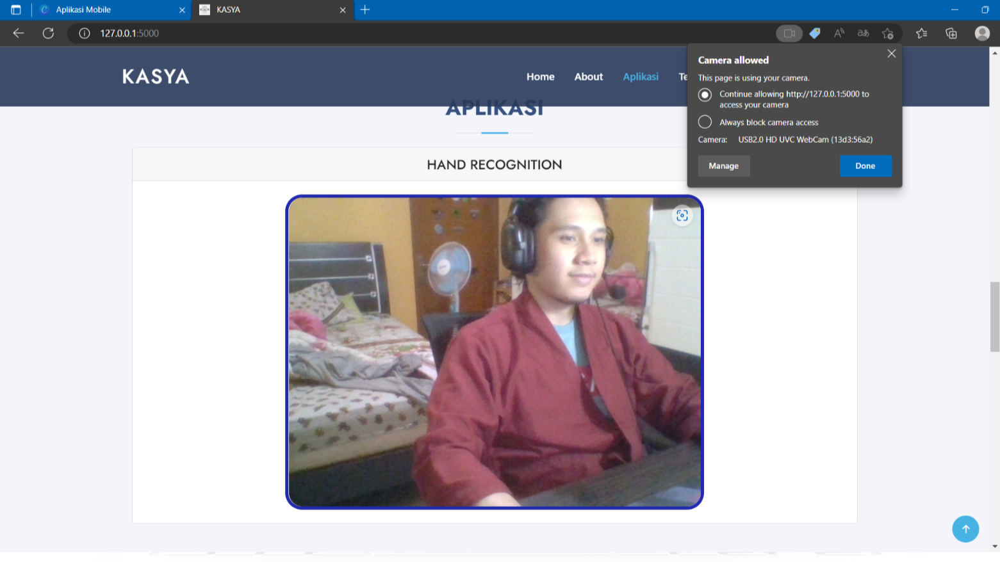
Kasya (kata isyarat) is project to develop software AI web-based for translating Indonesian sign language (Bisindo) in real-time.

HTML

CSS

JS

Python

MySQL
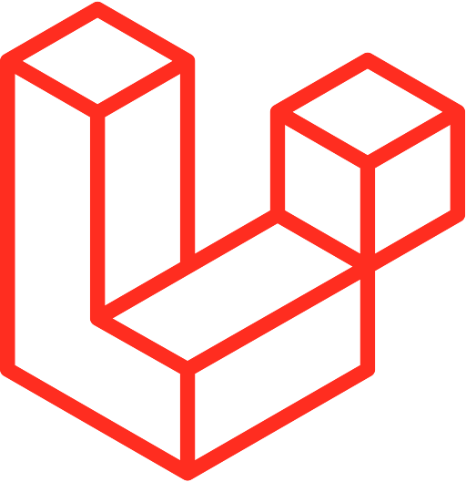
Laravel
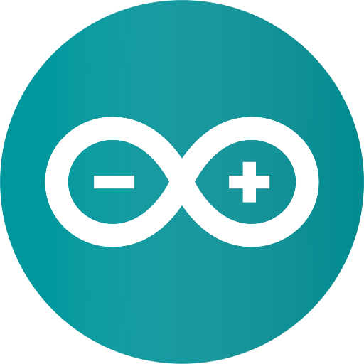
Arduino
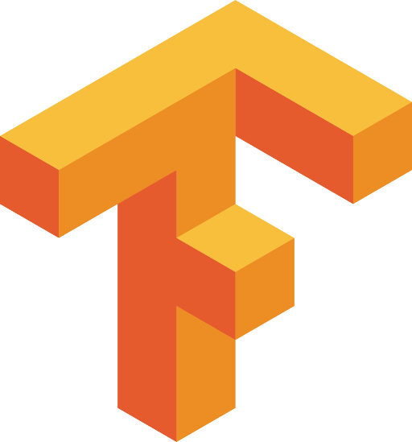
Tensorflow
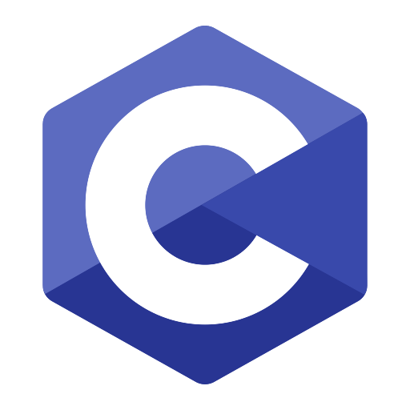
C

Bootstrap
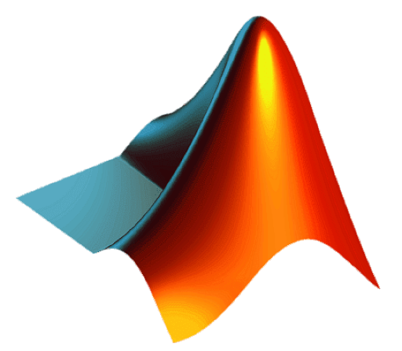
Matlab
Flask
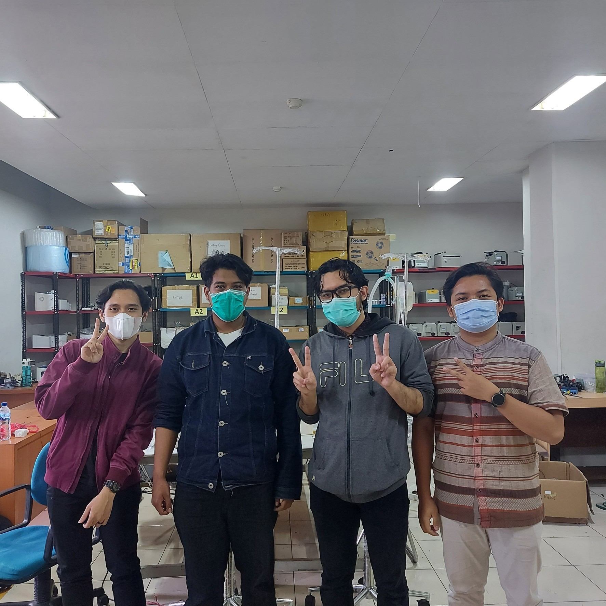
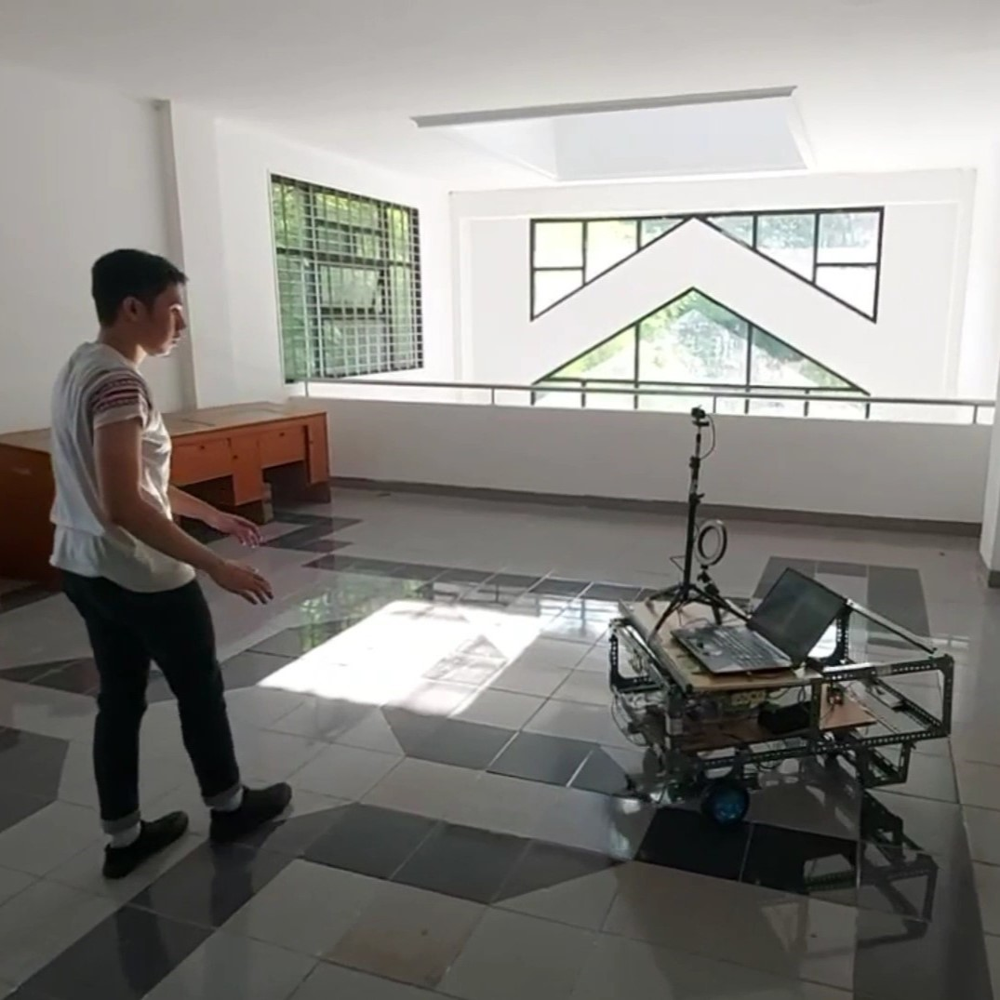
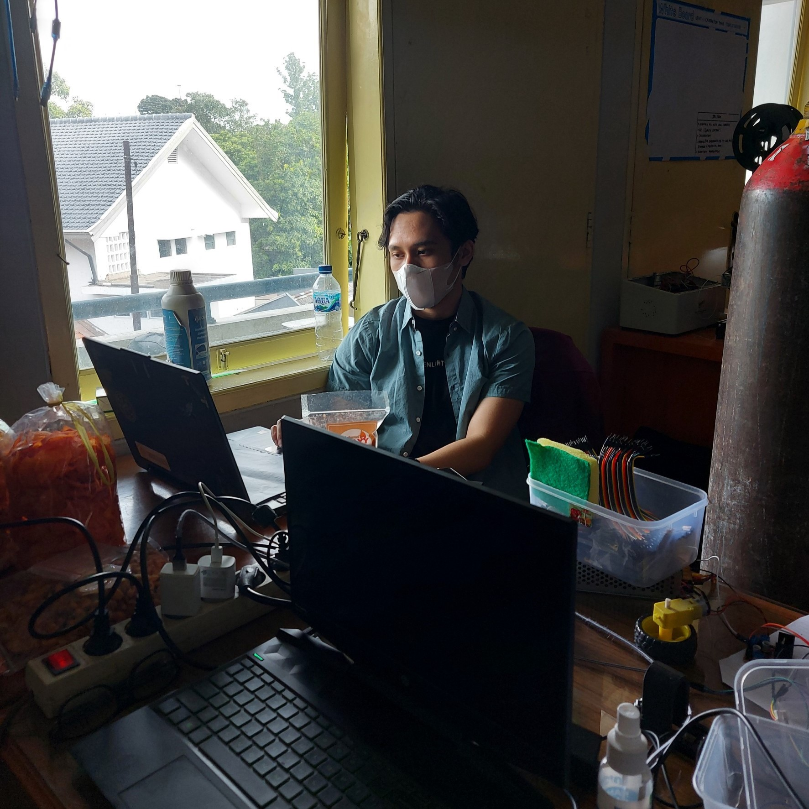
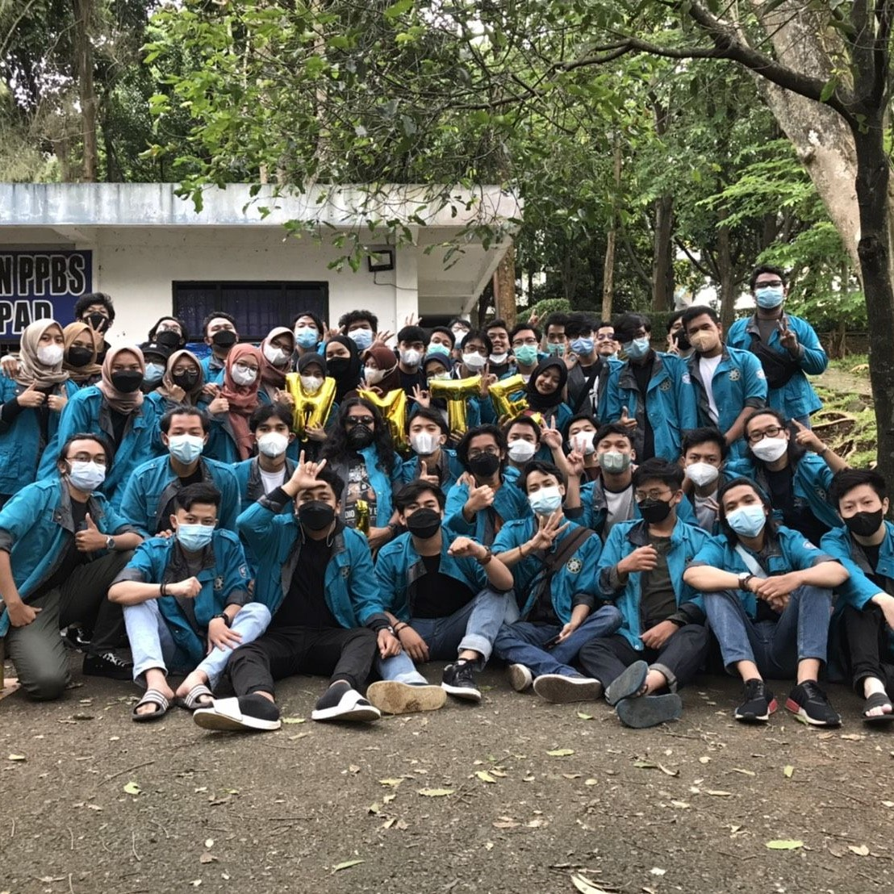
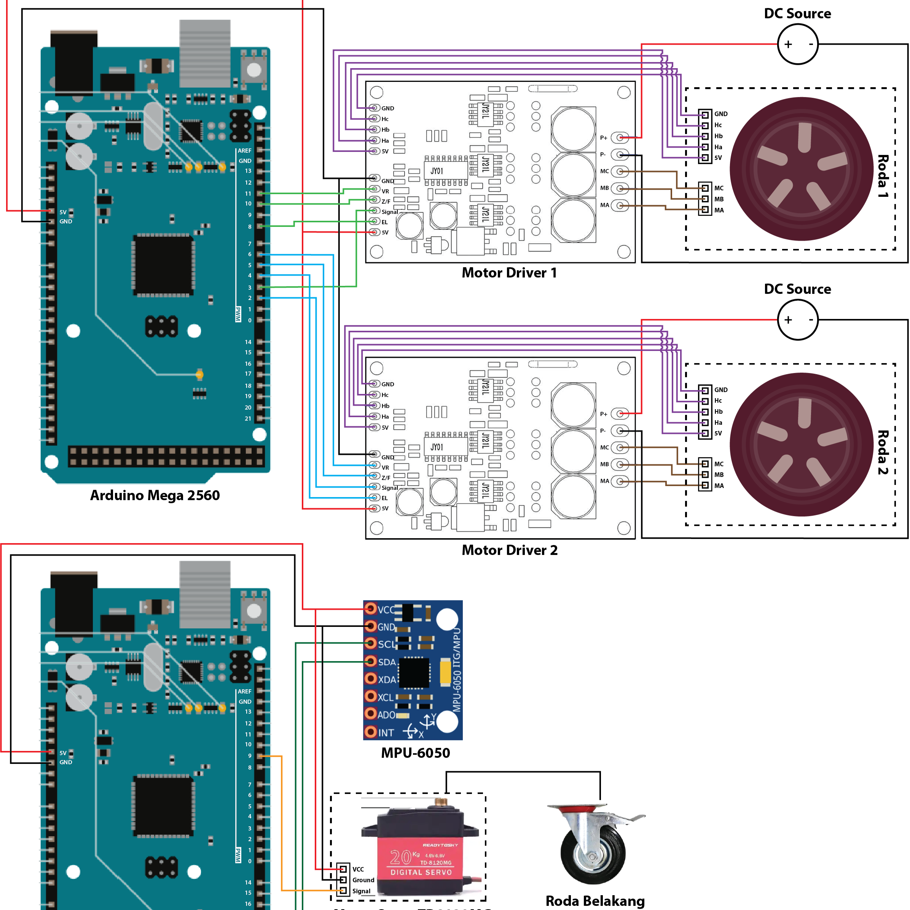
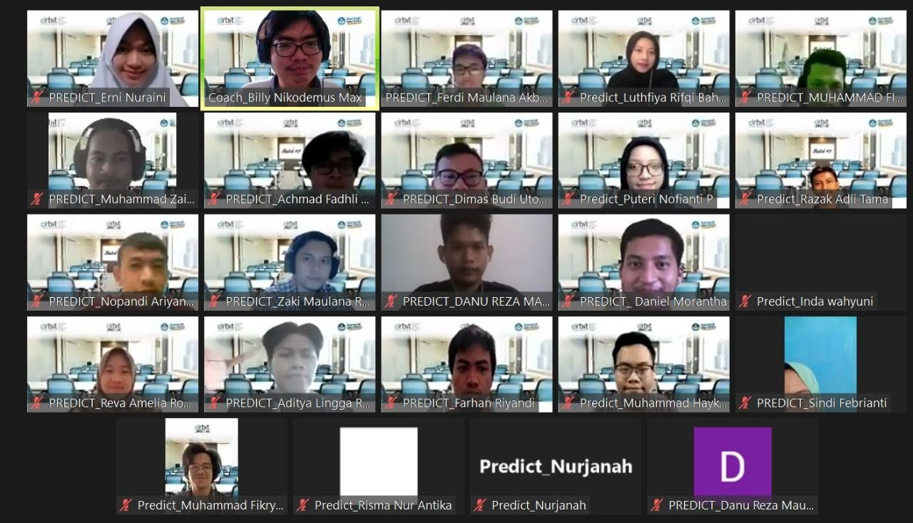